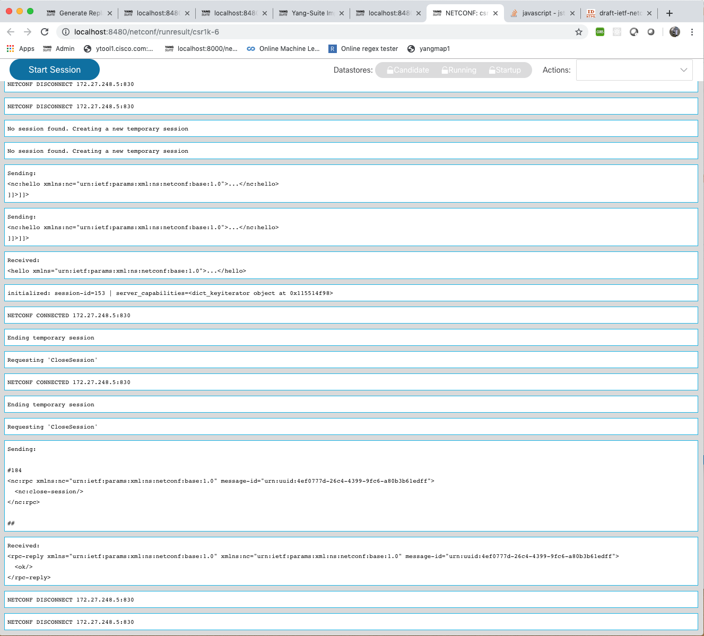
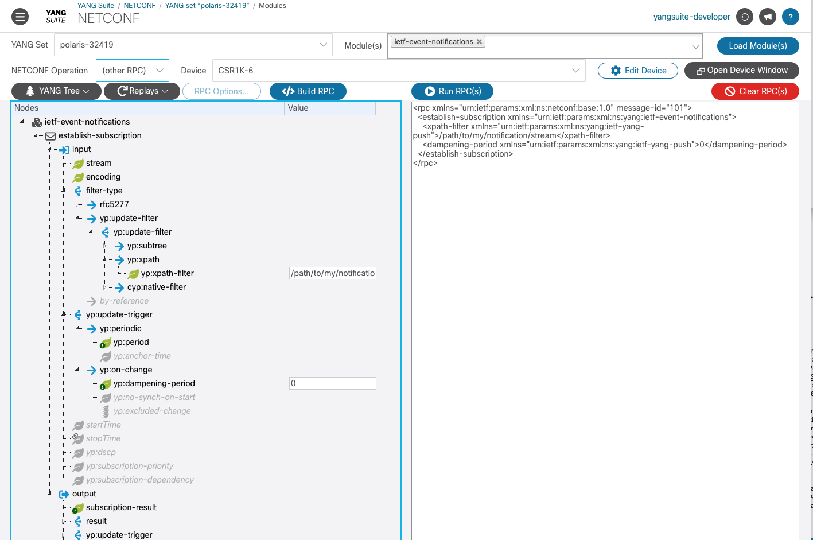
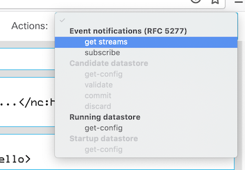
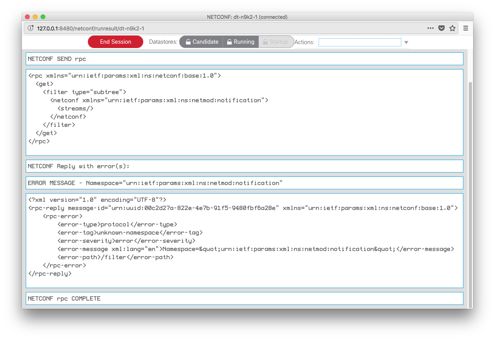
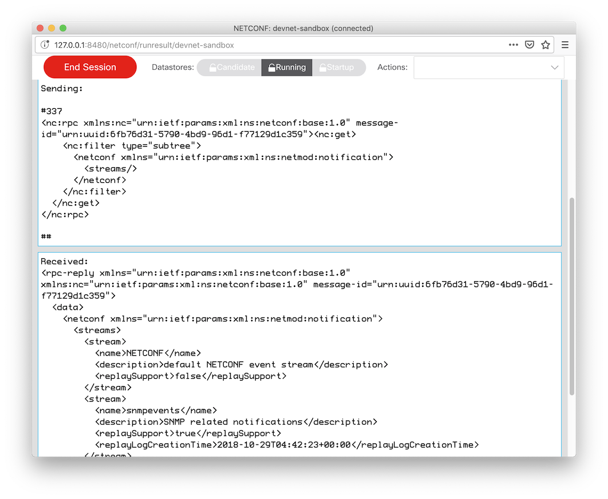
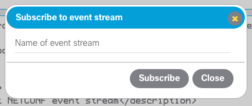

Working with NETCONF Notification Streams¶
Notification streams are a mechanism that allows users to recieve data from a network device when specific events occur. The basic concept is that the user opens a NETCONF session, subscribes to a notification stream, and waits for stream events to occur in the open session. When the session is ended, the stream is no longer active.
Opening s NETCONF Session¶
To start, you must have an active NETCONF session with the device. Select the device from the “Devices” dropdown, then click “Open device window”.
Next, click “Start session” in order to establish an active NETCONF session.

Cisco devices support draft-ietf-netconf-netconf-event-notifications (not an official RFC) using the ietf-event-notifications model.
With the device window open and a session established, you can then construct NETCONF subscription messages using the ietf-event-notifications model from a YANG module set (see: “Defining a YANG Module Set). Once you have set values identifing the stream you wish to recieve events from, click on “Build RPC” followed by “Run RPC”. The subscription message will be sent through the open session.
NETCONF RFC 5277 Notification Streams¶
YANG Suite also supports RFC 5277 (NETCONF Event Notifications) for supported devices. If your device supports notifications, YANG Suite provides ready-made actions to list the supported notification event streams or subscribe to a specific event stream.
To start, you must have an active NETCONF session with the device. Select the device from the “Devices” dropdown, then click “Open device window”. Next, click “Start session” in order to establish an active NETCONF session.
In this window, use the “Actions” menu and select the “get streams” action in order to automatically send the NETCONF RPC used to query for supported event streams.
If your device does not support notifications, you will see an error response from the device, as in the below example:
If your device does support notifications, you should receive a success reply containing a list of the supported event streams, as in the below example, which shows a device reporting that it supports two streams, “NETCONF” and “snmpevents”.
You can subscribe to any given event stream by selecting “Subscribe” from the Actions menu. A dialog box will pop up prompting you to enter the name of the desired stream.
Enter the name of the stream and click “Subscribe”. You should see the “create-subscription” RPC being sent and acknowledged by the device.
I subscribed to the ‘snmpevents’ event stream and I can see them being displayed in the window as they happen:

Currently the only supported way to stop an event stream subscription is to close the NETCONF session to the device, either by clicking “End Session” or by closing the session window altogether.